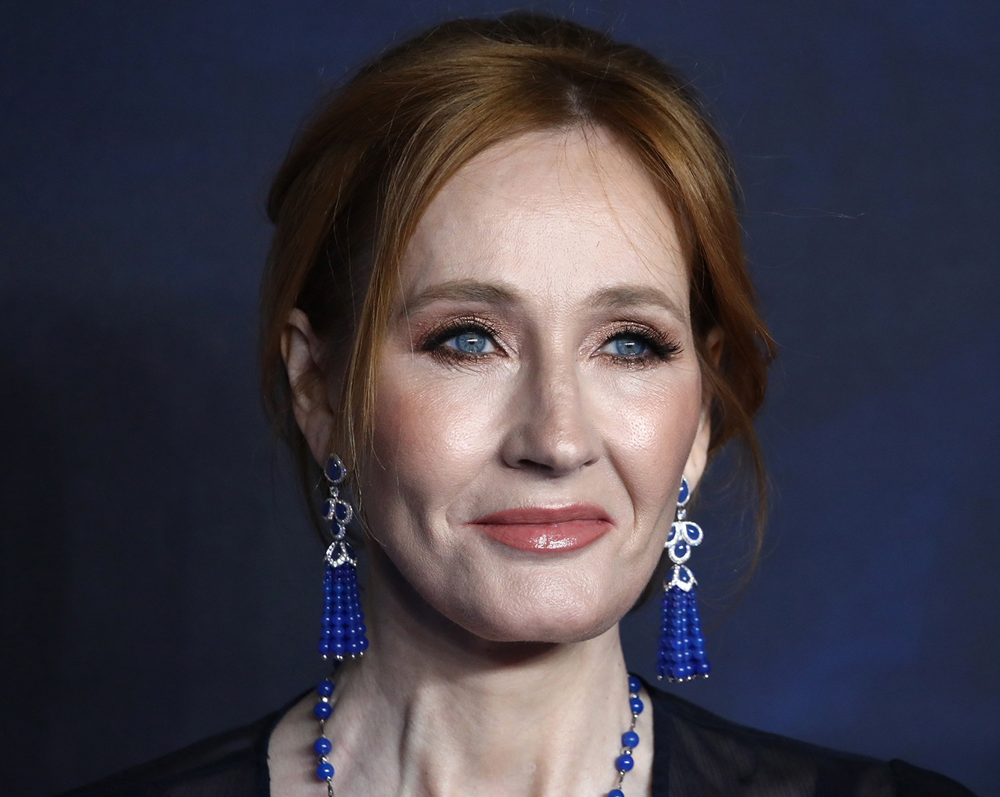

 J. K. Rowling
La escritora británica Joanne Kathleen Rowling se hizo célebre con su serie de novelas dedicadas a las aventuras de Harry Potter, uno de los mayores fenómenos literarios de la historia. Las peripecias de un niño huérfano con poderes mágicos capaz de evadirse a voluntad a un mundo de fantasía consiguieron batir todos los récords de ventas en la literatura del género, aunque muchos críticos se mostraron reacios a encasillar los libros de Rowling como cuentos para niños, como ocurriera con el famoso Tom Sawyer
La persona que hizo posible que muchos niños y adolescentes prefiriesen leer un libro a pasar las horas muertas delante del televisor es una tímida británica que se propuso escribir siete entregas de la serie, que equivalen a los cursos que el protagonista debe superar en la escuela de magia y hechicería a la que asiste cuando se escapa de la horrible realidad cotidiana en casa de sus mezquinos tíos.
Según algunos críticos literarios, la autora logró crear en sus novelas una inquietante atmósfera atractiva a los ojos de lectores de muy diversa condición y edad, a partir de influencias reconocibles en los libros de escritores británicos como Enid Blyton, Richmal Crompton o Roald Dahl. Pero, paradójicamente, ella misma afirmaba que nunca pretendió escribir fantasía y que la idea le surgió a partir de sus propios recuerdos de la infancia. Prácticamente desconocida y con problemas económicos en la primera mitad de la década de los noventa, cuando vivía de una modesta pensión como desempleada, J. K. Rowling se convirtio en una mujer rica y popular en Europa y sobre todo en Estados Unidos, donde multitudes de niños acompañados por sus padres soportarian largas colas en las librerías para hacerse con las últimas aventuras del pequeño mago.
La infancia que nutrió a Potter
Joanne Kathleen Rowling nació el 31 de julio de 1965 en la pequeña localidad británica de Chipping Sodbury, cerca de Bristol, en el suroeste de la isla. Debido al trabajo de su padre, Peter, ingeniero de la compañía Rolls-Royce casado con Anne, una escocesa con raíces francesas, su familia tuvo que cambiar de residencia en varias ocasiones durante la infancia de las pequeñas Jo y Di, cariñosos apelativos familiares de la futura novelista y su hermana menor, Dianne.
Tras una breve estancia en Yate, se mudaron a Winterbourne, siempre sin alejarse de los suburbios de Bristol, entorno en el que se forjaron los primeros recuerdos de la imaginativa niña, que pasaba horas compartiendo sueños y fantasías con su hermana. Lectora y escritora precoz, entusiasta aficionada a devorar novelas para adultos, a los seis años ideó un conejo que tuvo el honor de ser su primer héroe en un cuento que tituló Rabbit.

Daniel Radcliffe interpreto el papel de Harry Potter
en todas las peliculas, creciendo con el personaje
En Winterbourne las niñas hicieron amigos entre el vecindario; uno de ellos se llamaba Ian Potter.
Aficionada a adoptar nombres extraños para los protagonistas y lugares de sus novelas, muchos años después Joanne tomó prestado
ese apellido para dar vida a su famoso personaje. Cuando Jo tenía nueve años, los Rowling hicieron realidad su sueño y se mudaron
a un área rural del condado de Gwent llamada Forest of Dean, núcleo de población cercano a Chepstow, donde las dos hermanas
descubrieron el placer de jugar en los verdes campos británicos próximos al río Wye.
Pero el feliz cambio tuvo su contrapartida en los problemas en la nueva escuela a la que asistieron las Rowling y
que acabó por convertirse en un tormento para la mayor de las hermanas, quien recordaría durante años a su odiada profesora Mrs.
Morgan, hasta el punto de trasladarla a sus novelas y hacer que encarnara a uno de sus malévolos personajes.
La pecosa, estudiosa y bastante insegura «gafotas» Joanne, según su propia definición, creció y dejó la escuela primaria de Tutshill para entrar en la de Wyedean, donde empezó a interesarse por los idiomas. Alumna aplicada, pronto destacó también por su afición a contar historias a un reducido círculo de amigos, quienes escuchaban con atención la narración de largos relatos en los tiempos del recreo. Durante su adolescencia escribió mucho, pero, con la excepción de algunos divertidos cuentos, nunca se atrevió a mostrar sus manuscritos a nadie.
Años difíciles
Una vez graduada en Wyedean, Joanne K. Rowling se matriculó en la Universidad de Exeter, donde, siguiendo el consejo paterno, estudió francés con el propósito de encontrar después un buen trabajo como secretaria bilingüe. Con los títulos de lengua y literatura francesas todavía relucientes, se trasladó a la sede de Amnistía Internacional en Londres para realizar un trabajo de investigación sobre las violaciones a los derechos humanos en el África francófona.

Harry Potter y la piedra filosofal, primera entrega
de la serie, fue llevada al cine en 2001
Tras este breve período de formación empezó a trabajar como secretaria, pero pronto descubrió que el orden y la rutina no iban con ella. Varias experiencias frustrantes en diferentes empresas, unidas a la triste desaparición de su madre, enferma de esclerosis múltiple, la llevaron a dejarlo todo a los veintiséis años y a abandonar el país con la intención de enseñar inglés en el extranjero.
En Lisboa disfrutó enseñando su lengua materna a alumnos portugueses y tuvo bastante tiempo para escribir, su verdadera vocación. Allí conoció y se enamoró de Jorge Arantes, un periodista de la televisión portuguesa con el que contrajo matrimonio en octubre de 1992 y con quien, un año más tarde, tuvo una hija a la que llamó Jessica «en honor a una brigadista británica que había luchado en la guerra civil española», según afirmó en una entrevista. Pese al feliz acontecimiento, el matrimonio no prosperó y pronto acabó en divorcio.
Madre de una niña pequeña y sola en un país extranjero, en 1996 Joanne decidió regresar a Gran Bretaña y se instaló en la ciudad escocesa de Edimburgo, cerca de su hermana Dianne, donde llegó con la firme intención de acabar y publicar una novela sobre un tal Harry Potter, personaje infantil con poderes mágicos, cuyas andanzas había imaginado bastante tiempo atrás durante un interminable viaje en tren entre Manchester y Londres.
La tenaz profesora de francés pasó muchas tardes de su vida escribiendo «para sí misma» en un cálido café próximo a un pequeño apartamento sin calefacción en el que malvivía con su hija. Finalmente, la infatigable novelista logró una beca del Scottish Arts Council que le permitió concluir, cinco años después de empezada, la que entonces era la obra de su vida: Harry Potter y la piedra filosofal.